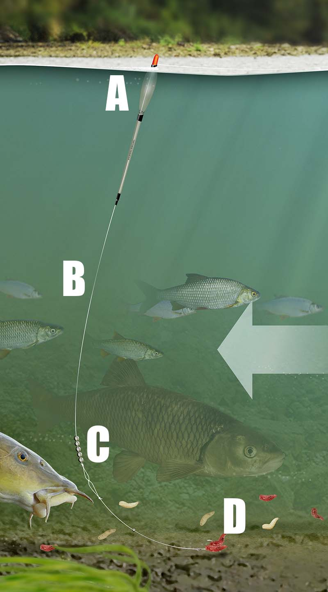

There are many different rods, reels and set-ups to choose from but dont be intimidated by the various combinations to choose from. Here is a quick guide of what equipment you need and how to set it up.
There are many different rods, reels and set-ups to choose from but dont be intimidated by the various combinations to choose from. Here is a quick guide of what equipment you need and how to set it up.
Float fishing is one of the most popular ways of fishing.
The diagram shows a typical float setup however there are many different ways you can set up yours.
A is the float attached to the main line with rubber bands.
B is the main line, 3lb to 8lb is ideal for most types of course fishing
C shows where the weights are places. Most floats will have the amount of weights needed printed on the body of the float
D shows the hook length, notice that the hook length is weaker than the main line, this is in case the hook gets snagged and will snap
ensuring your rod is'nt damaged
The maggot feeder is a great way to target fish feeding on the bottom of the swim, it also ensures there's a
small amount of bait next to your hook to lure the fish.
The diagram shows tyoical set a set up of a magoot feeder.
1-main line is connected to the feeder
2-hooklength is attached to the feeder."(remember the hooklength is weaker than the main line)"
3-shows the hook and bait
4-shows a rubber which helps prevents the line getting tangled
5-shows the effects of the maggot feeder
Terminal tackle is the term used to describe tackle such as hooks, weights and line. Terminal tackle needs replacing frequently and there are a huge number of different types and sizes of items to choose from.
There are many diffrents baits to choose from most common are; maggots, casters, warms, pellets, sweetcorn and tinned meat.